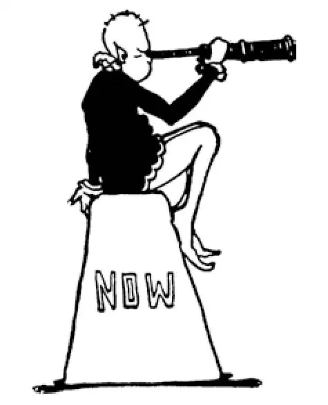

89
Yesterday, Today, and Tomorrow
昨天、今天、明天

THERE is a candy shop near where I live. On its sign it says, “Made Fresh Every Hour.” History is being made every day. It is being made fresh every hour. We read about it in the newspapers and the magazines, or hear about it on the radio or television.
Up to this time, history has been marked by the story of one war after another—some big, some small, some short, some long. Almost always a fight has been going on somewhere. It has been War, War, War—Fight, Fight, Fight. Children scratch, kick, and bite. But the older we get, the less do we use our fists and feet to settle quarrels. Fighting seems to be a sign of childhood—that we are kids —and our fights, that we call wars, a sign of how young the world really is and we really are—a sign that the world is still but a minute or two old.
Now we admire and praise as heroes Horatius, Leonidas, Joan of Arc, General Eisenhower, and those who have defended their countries against the attacks of the enemy, as we would admire a man who stops a burglar or a murderer who attacks his family in the night. But those, whether kings, generals, or princes, who do the attacking and take life with no other excuse than to add to their power or wealth or glory, are no better than burglars, who go forth with a gun and a blackjack to waylay, rob, and murder for the same purpose. War kills, war destroys, war costs millions of lives and billions of dollars—money that could be used to make us happy, to make the world a better place, instead of causing bitterness, suffering, misery, and unhappiness, widows, and orphans. No one is better off, not even the winner. War is a terrible game, in which even the winner loses.
This is certain: If wars do not end, they will be fought with weapons so deadly that all the people of a country or even of a continent may be killed. Already atomic bombs explode with such a blast that one bomb can blow a whole city to smithereens. Perhaps, if wars continue, there won't be anyone left alive in the whole wide world; and that will be the end of human history.
Perhaps wars can be stopped. Many people everywhere go on trying and hoping to end the danger of another war. It isn't easy to prevent wars, but if the United Nations can act like a fire department to put out wars like fires before they get burning too fiercely, then the world can go on with years of peace. New inventions will be used for peace instead of war.
Already man's inventions seem more magical than magic itself. Airplanes and helicopters and spaceships take the place of flying carpets. They're much better, too, than flying carpets for there really are airplanes, but magic carpets never flew except in man's imagination. Whatever you can imagine, no matter how wild your imagination is, will probably someday be invented—if wars can be prevented. You can imagine an invention to prevent all wars and you can be pretty sure it will someday be in use—if another war doesn't spoil everything first.
Inventions are not quite the same as discoveries. If a thing was there all the time but people didn't know about it, it became a discovery, not an invention.
Discoveries and inventions! Discoveries have been just as important as inventions in the last hundred years and seem just as magical. Of course there are no more continents to discover, but there are still wonderful discoveries being made all the time.
Some of the most important discoveries have been about diseases and how to prevent them. These discoveries have long names like:
Vaccination! Smallpox used to be everywhere. It was a deadly disease. The discovery of how to prevent it by vaccination has saved maybe as many lives as war has taken.
Pasteurization of milk! Do you know what that is? It was named for the Frenchman who discovered how to kill deadly germs. You can guess his name. Yes, it was Pasteur.
Inoculation! Do you know what that is? Has the doctor ever given you an injection from a needle to protect you from tetanus or typhoid?
Anesthetics! Do you know what that is? Anesthetics put you to sleep if you have to have an operation. Think of the suffering the discovery of anesthetics has prevented.
Penicillin! Do you know what this is? It was discovered just in time to save the lives of many wounded men in World War II.
I wish I could tell you about inventions like the electric eye and radar and jet propulsion. I wish I could tell you about famous scientists like Charles Steinmetz and Albert Einstein. I wish I could tell you about all the inventions and discoveries—from vacuum cleaners to cyclotrons, from air conditioners to electron microscopes, from dynamos to lasers and quasars and human-heart transplants. And blood plasma—an African American, Charles Drew, figured out how to store this in blood banks so it, too, could be used to save the wounded fighting men. You see, scientists can be war heroes just as much as the soldiers! I wish I could tell you about all of them, but I can't. There isn't room in this book for the story of these and dozens of other wonderful things; and besides, I'd never catch up, for new discoveries and inventions are being made all the time—“Made Fresh Every Hour.”
This story ends here, but only for the moment, for history is a continuing story and keeps going on and on. Even while you are reading this line, scientists are working on inventions and discoveries that may be in the history books of the future.
If you were living in the year 10,000 A.D., as some boy or girl will be, your history would only be just begun when you had reached where we are now. Even World War II would then seem as long ago as the fights of the Stone Age men seem to us. You might think of us and all our wonderful inventions in the same way that we now think of the discovery of copper and bronze.
Perhaps then people will no longer use trains, boats, automobiles, or even airplanes, but go from place to place as on some magic carpet, simply by wishing. Perhaps then they will no longer use letters, telephones, radio, television, or even computers, but read each other's thoughts at any distance.
Perhaps by then people will know how to build factories that don't poison the air and water and to use earth's resources wisely so we don't run out. And perhaps people will have learned to share, so that everyone in the whole wide world has enough food to eat and a decent place to live. Perhaps, best of all, people by then will know how to settle their problems without fighting wars.
And so on—World without end—AMEN!
【中文阅读】
我住的地方附近有家糖果烟杂店。店铺的招牌上写着：“每小时都有新货。”历史每天都创造。每小时都在更新。我们在报纸和杂志上读到历史，或者在收音机或电视上听到历史。
直到现在为止，历史都是以一个接一个的战争故事作为标志的——有些战争规模大，有些规模小，有些时间短，有些时间长。世界上总有某个地方在打仗。历史就是战争、战争、战争——打啊、打啊、打啊。小孩子们在一起，动不动就挠呀，踢呀，咬呀。但是随着年龄增长，我们就越来越不愿意用拳打脚踢来解决争端。打架似乎是童年的标志——表示我们是“小孩子”——我们人类的打斗，现在叫做战争，表示这个世界是多么年幼，而且我们人类也确实如此——战争就是一个标志，表示这个世界出生才一两分钟。
我们钦佩和赞颂贺雷修斯、列奥尼达、圣女贞德、艾森豪威尔将军和那些保卫国家抵御敌人袭击的人，把他们誉为英雄，就像有个人拦住一个深夜闯进自己家里 的盗贼或杀人犯，使自己的家人免受伤害，我们当然会钦佩这样的人。但是有些人没有任何理由，只是为了增加自己的权力、财富或荣誉就去攻击别人，夺人性命，这些人，无论他们是国王、将军，还是王子，实际上和那些为了同样的目的带着枪和金属短棍前去伏击、抢劫和谋杀的强盗没有任何区别。战争引起死亡，战争造成破坏，战争牺牲了千百万人的生命，耗费了数十亿美元——这些钱原可以用来使我们生活幸福，把这个世界建设得更美好，而不是用来制造仇恨、痛苦、苦难、不幸、寡妇和孤儿。没有人因为战争而更幸运，甚至胜利者同样如此。战争是场可怕的游戏，在这场游戏中甚至赢家也是输者。
有一点是肯定的：如果战争不结束，毁灭性武器就会使用到战争中来，那么整个国家的人，乃至整个大陆的人都可能被杀光。原子弹爆炸了，已经证明它的威力可以将整座城市炸得粉碎。也许，如果战争不断继续下去，整个世界都将没有人幸存下来，那将是人类历史的终结。
也许战争可以被阻止。世界各地有许多人都在不断努力，希望从此不再有战争的威胁。预防战争是不容易的，但是如果联合国可以起到消防署那样的作用，在战火还没猛烈燃烧起来时，就扑灭它，那么这个世界就可以过上几年太平日子。新的发明将用于和平建设而不是用于战争破坏。
人类的发明似乎已经比魔法还要有魔力了。飞机、直升机和宇宙飞船取代了神话中的飞毯，而且也比飞毯要好多了，因为飞机是真实存在的，而魔毯只在人类的想象中飞行。无论你的想象力有多么天马行空，凡是你能想象出来的东西有可能在将来的某一天被发明出来——只要可以防止战争。你可以想象有个发明能防止所有的战争，而且你能非常确信有一天它会派上用场——只要在这之前另一场战争还没有把一切都毁掉。
发明和发现不完全相同。如果有个事物始终存在但是人们对它并不了解，有人知道了它的存在，那么这就成了发现，而不是发明。
发现和发明！在过去的一百年中，发现和发明同样重要，也似乎有同样的魔力。当然不再有新大陆等待人们去发现了，但是令人惊讶的新发现还是一直层出不穷。
有些最重要的发现是有关疾病和如何预防疾病的。这些发现都有很长的英文名字。比如：
接种疫苗！过去天花到处流行。它是一种致命的疾病。自从有人发现通过接种疫苗预防天花的方法以后，无数人的生命被挽救了，其人数可抵战争夺去生命的人数。
巴斯德氏消毒法！你知道那是什么吗？那是一种杀死致命细菌的方法，这个方法是一个法国人发现的，所以以他的名字命名。你能猜出他的名字。对，他的名字就是巴斯德。
预防注射！你知道那是什么吗？医生曾经给你注射过破伤风预防针或者伤寒预防针吗？
麻醉剂！你知道那是什么吗？如果你动手术，麻醉剂可以让你沉睡。你想想看，麻醉药的发现可以让人避免经受多么大的痛苦。
青霉素！你知道那是什么吗？青霉素的及时发现挽救了第二次世界大战中许多伤员的生命。
我希望我还可以给你讲一讲一些发明，比如电子眼、雷达和喷气推进器。我希望我可以介绍一些著名科学家，比如查尔斯•施泰因梅茨和阿尔伯特•爱因斯坦。我希望我可以把所有的发明和发现都介绍一遍——从真空吸尘器到回旋加速器，从空调到电子显微镜，从发电机到激光、类星体和人的心脏移植。还有血浆——一位美国黑人，查尔斯•德鲁，研究出在血库里储存血浆的方法，这样血浆也可以用来救助受伤的战士。你看，科学家也能像和士兵一样成为战斗英雄！我希望我可以告诉你有关他们的一切，但是我不能！这本书已没有地方再写这些人的故事和许多其他神奇的事物了；况且，我也跟不上现在科学发展的形式，因为新发现和新发明层出不穷——“每小时都有新货”。
这本世界历史的故事到这里就要结束了，但这只是暂时的，因为历史是持续不断的故事，它继续向前，向前……甚至在你读这一行字的时候，科学家们正致力于新发明和新发现，这些新的科学成果也许会写进未来的历史书中。
如果你像未来某个男孩和女孩那样生活在公元10000年，那么当你读到我们现在的历史，你的历史故事书才刚开始。甚至连第二次世界大战在那时看来也是久远以前的事，就像石器时代人们的争斗在我们看来是久远以前的事一样。也许那时你对我们和我们所有奇妙的发明的想法，就同我们现在对以前铜和青铜的发现的想法一样。
也许那时人们不再使用火车、轮船、汽车，甚至飞机，而是只要心里动一下念头就可以从一个地方到另一个地方，就像坐在魔毯上。也许那时他们不再使用信件、电话、收音机、电视，甚至电脑，而是直接看出彼此的心思，无论彼此相距多远。
也许到那时人们知道了怎样建造不会污染空气和水的工厂，和怎样合理使用地球上的资源，这样我们就不会把资源耗尽了。也许那时人们已经学会了分享，这样全世界的每一个人都有足够的食物吃，有舒适的地方住。也许，最好的事情就是：人们到那时知道如何不用发动战争就能解决问题。
照这样类推下去——世界永不止息——阿门！
